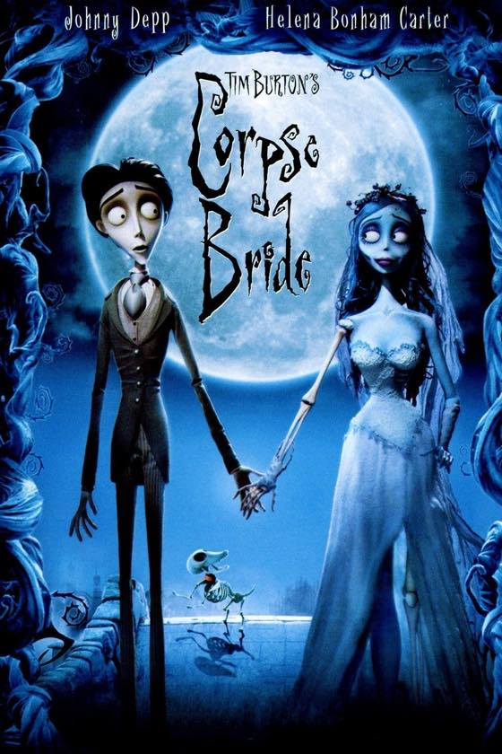
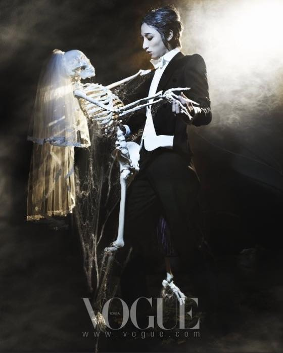
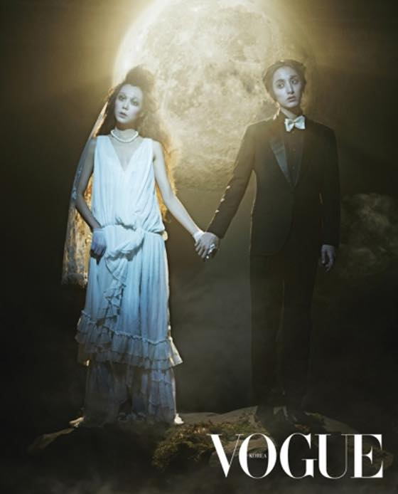
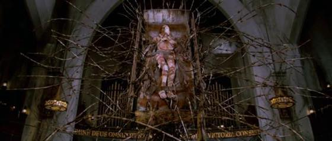

유령신부 2005
예전에 봤을때는 그냥 (팀버튼감독작품치고) 평이하다 라고 생각했는데
오랜만에 보니 무진장 새로웠음. 에밀리 늠 멋진 여자잖아 ;ㅂ;


영화보구 나서 예전 김민희, 이수혁 보그 화보가 생각나서 구글링해서 찾아봄.
이 사진 느므 좋아용//// 둘다 늠 잘 어울린다 ;ㅂ;
애나벨 2014
드디어 봤당// 컨저링에 비해 별로라는 평을 많이들어서 걱정(?)했는데 재미있게 잘 봤어요.
공포영화 보다보면 교훈은 아내말 잘 듣자(.....) 영화속 남편들은 왜이리 고집을 피우는가 ㅋㅋㅋㅋ
프랑켄위니 2012
이것도 다시 보니 늠 새로운게 많이 보였다. ........나이들었어 ;ㅂ; 늙었졍 ;ㅂ;
늠 팀버튼 스러움 ㅋㅋㅋㅋㅋㅋ
Near Dark 1987
보는 내내 대 폭소 ㅋㅋㅋㅋㅋ 80년대 뱀파이어물
각 등장인물의 디테일한 면(?)이 거의 나오지 않아 보는내내 아니왜?? 왜에?? 를 반복하게 됨.
뱀파이어가 되었다가 다시 사람피 수혈받으면 정상으로 돌아오는게 편리하겠다 란 생각을 잠깐함.
하지만 이 영화에서 뱀파이어가 되면 쪼코바 못먹음. 그럼 안할래......
사일런트 힐 2006
정말 좋아하는 영화 / 게임
별의카비랑 마리오 이후 정말 열심히 플레이한 게임이었다 ㅋㅋㅋㅋㅋㅋㅋ
그때 공략집도 제대로 없어서 동생이랑 영어사전 펼쳐놓고 해석하면서 암호 풀어서 게임 진행했음 ㅋㅋㅋㅋㅋ
5-6번 정도 본거같은데 다시 봐도 비주얼이 늠 훌륭하다

제일 좋아하는건 마지막 요 장면
보고있으면 이러니저러니해도 사람이 젤 끔찍한거 같다 란 생각이 들게된다.